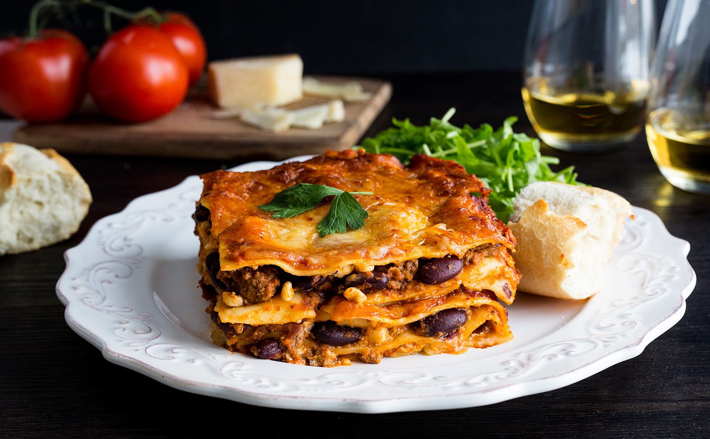

Lasagna

Ingredients
- 1 can (19oz) red kidney beans, drained and rinsed (540 mL)
- 1/2 lb lean ground beef (250 g)
- 1 onion, chopped
- 1 garlic clive, minced
- 13 oz can tomato paste (369 mL)
Steps
- Preheat oven to 350ºF (180ºC)
- In a shallow bowl mash ¾ of the beans
- In large non-stick skillet, cook beef, onions and garlic over medium heat, about 6 minutes or until beef is no longer pink and onions are translucent. Spoon off excess fat. Stir in mashed beans, whole beans, tomato paste, water, basil, thyme and oregano. Bring to boil, reduce heat and simmer until slightly reduced, about 15 minutes. Season with salt and pepper.
- In medium bowl, combine egg with cottage cheese and mix well
- Spread 1½ cups of meat sauce over bottom of 13×9 inch baking/lasagna dish. Set 1 cup of sauce aside. Arrange 4 lasagna noodles over sauce then coat with meat sauce again. Spread half of cottage cheese mixture over meat sauce then half of mozzarella over cottage cheese.
- Repeat noodles to mozzarella layer
- Bake until noodles are tender, about 40 minutes. Let stand about 10 minutes before cutting